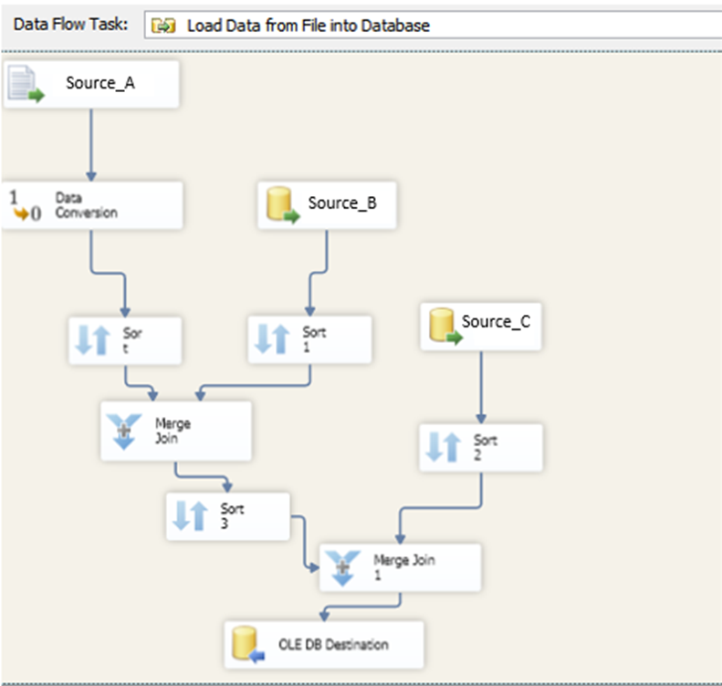

Data Engineering Projects

My experiences have allowed me to work with various technologies for creating data pipelines across many enterprises. Here, I outlined some of my favorite data engineering projects as well as the technologies and solutions used for performing ETL.
The 4 main technologies I have utilized to create these pipelines include:
1) Python
2) SQL
3) SSIS- SQL Server Integration Services
4) Power Query
Python
Today, Python has become one of the most popular tools for performing ETL tasks due to its ease of use and extensive libraries for accessing databases and storage technologies. In the context of using Python for ETL, there are many workflow management systems available to use. This is personally one of my favorite technologies to work with for building data pipelines.
During my time as a Data Engineer at T-Mobile, I was working in the Digital Performance Analytics team where we were responsible for each and every step in the software development life cycle to drive actionable data insights within the digital/web platform of the organization.
My responsibilities include developing pipelines with Python in Azure Databricks to extract, merge, transform, and load data from on-premises and cloud data centers such as Teradata, SQL Server, Adobe Analytics, GCP, and Azure Synapse Analytics respectively. These pipelines are then mainly used as the data sources for our reporting applications, such as tableau, Power BI, and SSRS Report Builder for BI reporting needs. As our pipelines are deployed to production, Databricks provides an easy-to-use scheduling system to automatically run the pipelines periodically.
(Azure Databricks Pipeline UI)
In addition to integrating data from on-premises and cloud data centers, I have also extracted datasets from websites with Python in SSMS.
During my employment with Health Plan of San Joaquin (HPSJ) as a Senior Data Analyst, our reporting data warehouse had a lot of missing data concerning the providers information. Many of these missing information however could be found on the California Government website as all PCPs within the CA state must be registered through the state portal. As a result, I performed web scraping in SQL Server with Python from the ca gov website to populate the tables in SQL Server to account for those missing data.
I started by installing BeatifulSoup, a python library designed to facilitate screen scraping, followed by requests. I had then retrieved and parse the html of the target page. This is followed by locating and pulling the table/dataset I am interested in on the web page. And finally, after some data cleansing and transformation based on our business requirements, I have imported and merged it into our SQL Server objects.
(SSMS Web Scraping Pipeline UI)
Tech stack: Python, SQL, Azure Databricks, Teradata, SSMS, Adobe Analytics, BigQuery, Azure Synapse Analytics, HTML
SQL
The common ETL process typically involves extracting data from one source file into a separate target file location. However, a pipeline for performing ETL can simply involve one or more stored procedures that themselves extract, transforms, and loads data within a relational database system. The SQL commands facilitate this part of ETL as they fetch data from different tables and even separate databases.
During my employment with Columbia Sportswear, our centralized data warehouse mainly consisted of objects built and updated through stored procedures in SQL Server. To begin with, raw data in its purest form are imported into the relational database from our internal systems through SSIS packages. Stored procedures are then built with SQL to create and update the dimension and fact tables by referencing and transforming the raw data, applying business roll-ups, and structuring the data to fit the needs of the consumers, including analysts, data scientists, and executives to inspect all of the data available reliably, quickly, and securely.
(SSMS SP Pipeline UI)
After developing our stored procedures, we set up SQL Jobs through SQL Server Agent to periodically execute our SP automatically and account for the updates, adds, and deletes of our dimensions and fact tables.
Tech Stack: SQL, SQL Server Management Studio (SSMS), SQL Server Agent, SSIS, Full Circle, SharePoint Site Content
SSIS - SQL Server Integration Services
During my employment with Health Plan of San Joaquin (HPSJ), I had performed ETL strategy with SSIS packages. We build SSIS packages in BIDS (Business Intelligence Development Studio) to merge data from heterogeneous sources, and perform data profiling, data cleansing, and standardization, before populating our data warehouses in SQL Server. The SSIS package includes all the necessary components, such as the connection manager, tasks, control flow, data flow, parameters, event handlers, and variables, to execute the ETL task.
As our packages extract and transform data from the internal systems of HPSJ, we load/dump it to SQL Server in 3 different stages/layers.
1) First layer contains all the historical data coming from the internal systems. In this layer, there is no transformation performed.
2) Second layer (staging database) only contains active data or “present” data of the internal systems. In this layer, transformations are done to derive attributes that meet the business needs. We also perform data profiling and cleansing (such as data conversion, lookup transformation, fuzzy lookup, etc.) during this stage.
3) Third layer is the server that will be used to connect to all our reporting applications. In this layer, we take existing data from the second layer and further normalize it to an ideal state for BI reporting.
As our SSIS packages are built and deployed, we schedule jobs to execute the packages automatically with SQL Server Agent.

(SQL Server Integration Services ETL workflow UI)
Tech Stack: SQL Server Integration Services (SSIS), SQL, Python, QNXT, MSExcel, SSMS
Power Query:
With extensive experiences of working with Power BI, it has helped me discover Power Query as a powerful ETL engine. While working with PBI, I have come to learn that it is more than just a data visualization tool, it is a collection of services, apps, and connectors. When you connect to a data source in Microsoft Power BI, underneath the connection is Power Query, a powerful ETL engine that is also available in many other products such as SSAS and Excel.
While I was working for Columbia Sportswear (prAna), I utilized Power Query and Power BI Dataflows for performing ETL strategy to build an enterprise-level data cube that ended up supporting 200+ reports and dashboards throughout the organization. I employed M language in Power Query to connect to various on-premises and cloud data centers and apply various transformations such as sorting, grouping, column splitting, etc. to fit the business needs. Amongst the various sources I have connected to with Power Query, I have also integrated the cube with Power BI Dataflows that I have created and managed in the workspaces of PBI Service where results are stored to Azure Data Lake Storage Gen2.
As our cube is published to the workspace, I have scheduled automated refreshes that will automatically trigger all steps within Power Query to be executed for each refresh.
(PBI Power Query Pipeline UI)
Tech Stack: SQL, M, DAX, PowerQuery, Power BI, SQL Server Management Studio, Sharepoint Online, DAX Studio
Summary:
We are entering a new era where data acts as the common denominator to making decisions in all aspects of life. Data engineering is at the epicenter of this data revolution movement. Without data engineering, we risk missing out on the full value of data at our disposal. I am thankful for the DE projects and opportunities I have experienced that have taught me the skills and importance of this field. I am excited and look forward to continue optimizing data towards usability for our data-driven future.